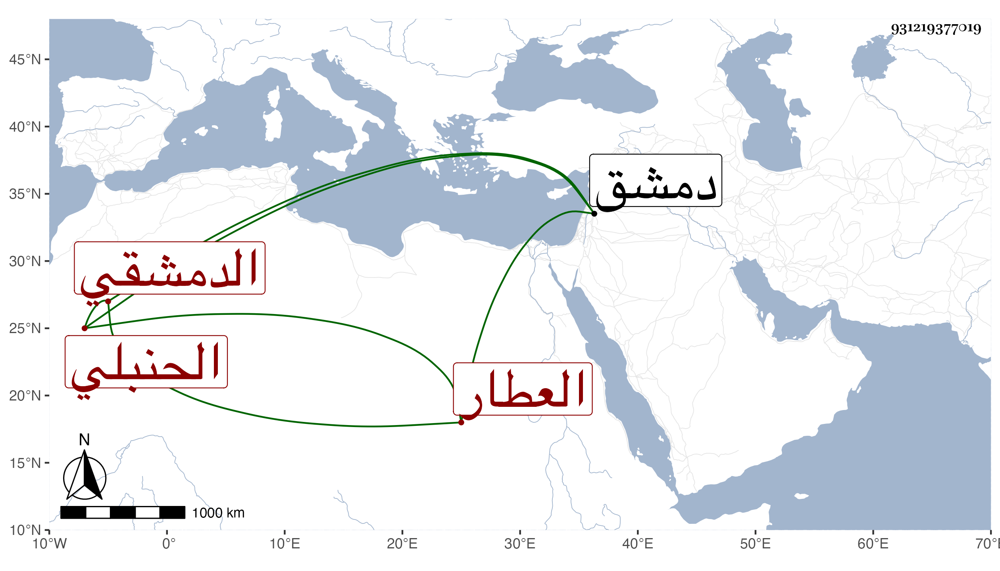

0902Sakhawi.DawLamic.ITO20230111-ara1.EIS1600.931219377019
Biography ID: 931219377019
إبراهيم بن العلامة الجمال أبي المظفر يوسف بن محمد بن مسعود السرمري ثم الدمشقي الحنبلي العطار . ولد في حدود الخمسين وسبعمائة وأسمع على ابن الخباز جزءا فيه أحاديث رواها أحمد عن الشافعي وفي آخره حديثان رواهما النسائي عن عبد الله بن أحمد عنه وعلى بشر بن إبراهيم بن بشر البعلي الفامي جزء أبي سهل الصعلوكي وحدث سمع منه الفضلاء روى لنا عنه ذلك عبد الكافي ابن الذهبي . قال شيخنا أجاز لي ومات في أواخر رمضان سنة ثلاث بدمشق .
